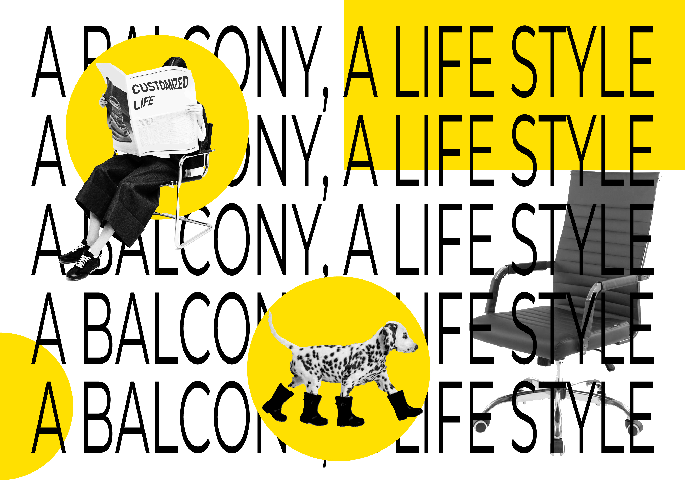
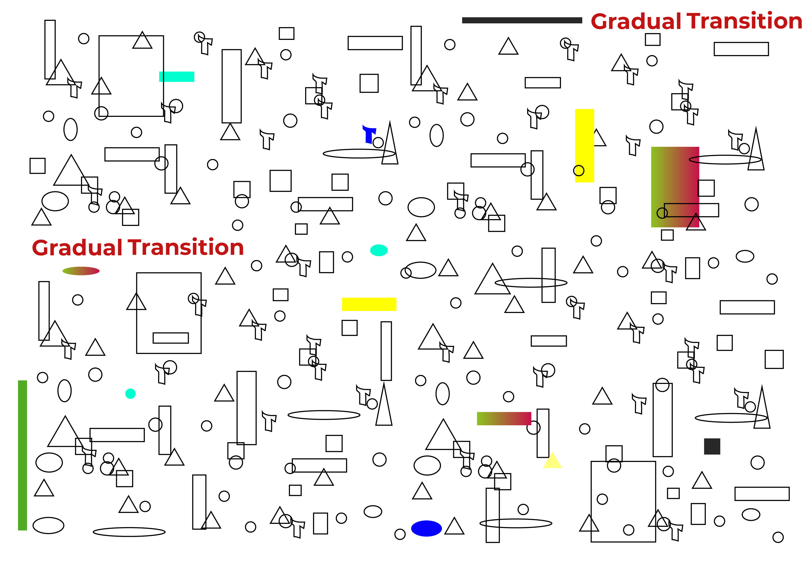
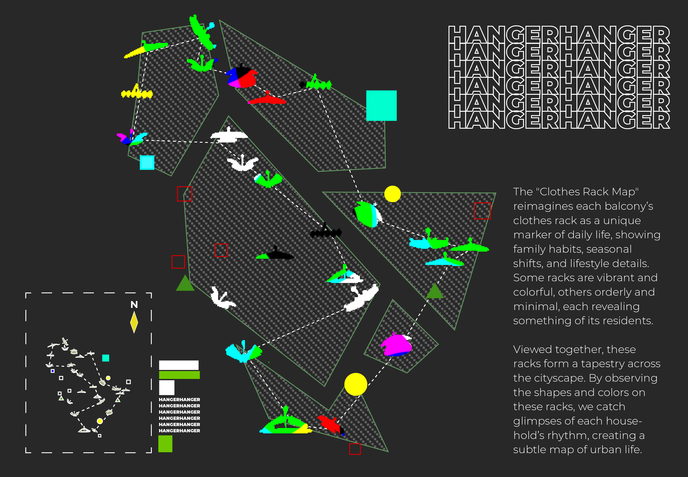
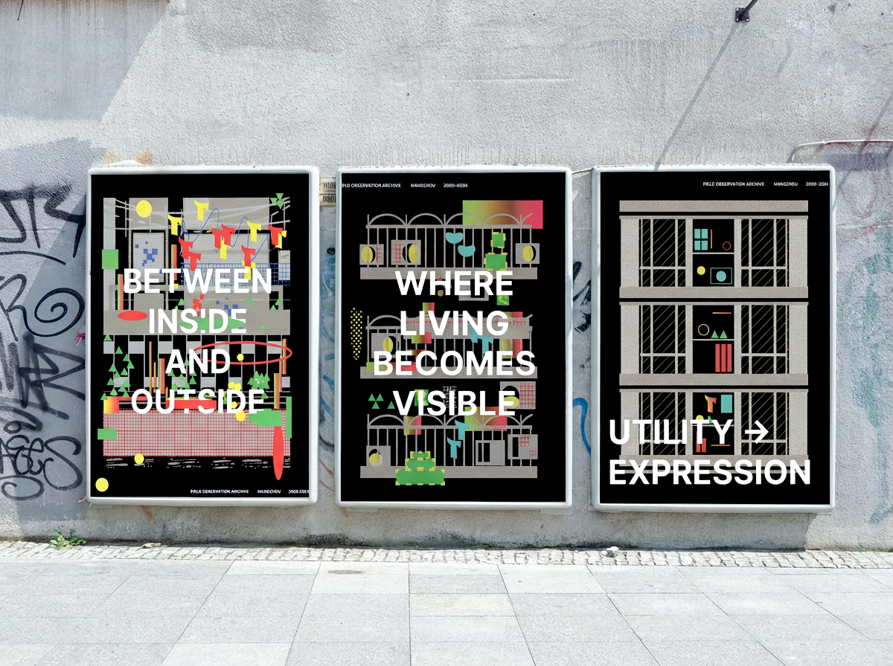

Balcony Metamorphosis
Concept
The balcony acts as an interface between interior life and the city. It opens outward while also forming a boundary, creating a subtle transitional space between the public and the private. Through elements such as enclosure, objects, and everyday traces, balconies reveal how people negotiate visibility, privacy, and personal space.
Overview
This project examines balconies in Chinese urban housing over the past two decades, tracing their transformation in form and use. Once primarily functional spaces for drying and storage, balconies have gradually evolved into enclosed, semi-enclosed, or personalized environments. These shifts reflect changing attitudes toward privacy, comfort, and self-expression. Through photography, image classification, and publication design, the project reorganizes these dispersed urban fragments into a readable visual system. It captures subtle, often overlooked changes in everyday life, offering an alternative way to understand urban development and social transformation.







.png)